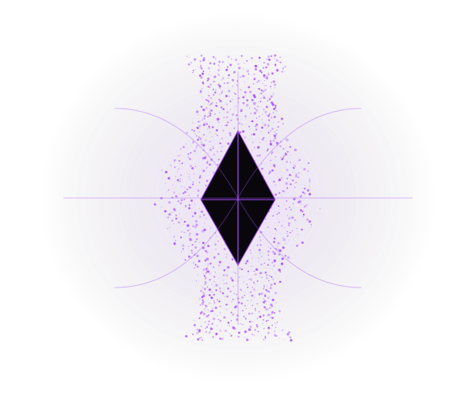

Trustworthy & secure AI
Adversarial testing, multilingual vulnerabilities, prompt injection, data poisoning, privacy, and safeguards for AI-enabled software.
Intelligence, examined. Knowledge, shared.
Building AI we can trust.
Making complex ideas teachable.
I connect research in secure, trustworthy AI with hands-on computing education—helping students ask better questions, build thoughtfully, and test what they create.



An imagined ASI: many signals, one evolving structure.
Original visual metaphor, not a scientific model of ASI.Explore my graphics ↓01 / Research
My research connects multimodal machine learning, data compression, distributed AI, and adversarial testing. I study how to make high-dimensional AI pipelines more efficient, reliable, and accessible.
Doctoral research / Rutgers University
As an NSF CSGrad4US Fellow, I work with Dov Kruger in Electrical and Computer Engineering, specializing in machine learning. My 2025–2026 work spans compression for AI training, distributed data-poisoning benchmarks, multimodal applications, and accessible STEM learning.
2026 / Published
Reducing data-processing overhead in AI training.
2025 / Poster
A distributed benchmark for studying data poisoning in parallel AI.
2026 / Published
Combining 2D, 3D, and text evidence in an auditable authentication workflow.
2025 / Published
Comparing retrieval methods for multilingual AI applications.
2025 / Published
Evaluating an AI-native development environment in programming tasks.
2025 / Published
Using parametric matching to improve data compression.
Explore the research domains
Adversarial testing, multilingual vulnerabilities, prompt injection, data poisoning, privacy, and safeguards for AI-enabled software.
Tool authorization, agent orchestration, retrieval quality, runtime monitoring, and human oversight in collaborative AI workflows.
Connecting images, language, video, and 3D representations through computer vision, motion analysis, and auditable evidence.
Interactive scientific storytelling, accessible STEM materials, equitable learning, and student research with responsible use of AI.
Parametric matching, grammar-aware data processing, and reducing CPU-bound parsing overhead in large-scale deep learning pipelines. This work connects compression research with distributed computing.
Vision-accessibility tools, spoken mathematical expressions, sign-language generation, and interactive scientific visualization that make technical ideas easier to explore.
Highlights summarized from my 2025–2026 CSGrad4US annual activities report. Publication records below distinguish published, accepted, and unfinished work.
02 / Publications
The complete bibliography from my CV: journal articles, conference papers, posters, preprints, and work in progress. Filter by topic, year, or publication status.
Google Scholar profile ↗77 bibliography records · 2015–2026
Education
IEEE ISAIA 2026
Exported from the listed metadata. Publication type and missing fields are not inferred.
@misc{kumar-cv-01,
author = {Y. Kumar and D. Kruger and J. J. Li and S. Ghosh},
title = {{The LLM Story: A Data-Bound Visual Narrative for Transformer Education and Preliminary Diagnostics}},
year = {2026},
howpublished = {IEEE ISAIA 2026},
note = {Accepted},
url = {https://www.youtube.com/watch?v=PHBoa0n2Pgs}
}Multimodal AI
IEEE ISAIA 2026
Exported from the listed metadata. Publication type and missing fields are not inferred.
@misc{kumar-cv-02,
author = {H. Rivera and Y. Kumar and D. Kruger and J. J. Li},
title = {{Can LLMs Estimate Scale from 3D Meshes?}},
year = {2026},
howpublished = {IEEE ISAIA 2026},
note = {Accepted}
}Trustworthy AI
IEEE ISAIA 2026
Exported from the listed metadata. Publication type and missing fields are not inferred.
@misc{kumar-cv-03,
author = {Y. Kumar and A. Luna and D. Kruger and J. J. Li and S. Sengupta and H. Abdalla},
title = {{A Periodic Table of Data Poisoning}},
year = {2026},
howpublished = {IEEE ISAIA 2026},
note = {Accepted},
url = {https://github.com/ykumar2020/datapoisontable}
}Trustworthy AI
IEEE ISAIA 2026
Exported from the listed metadata. Publication type and missing fields are not inferred.
@misc{kumar-cv-04,
author = {D. Li and G. Yang and Y. Kumar and J. J. Li and D. Kruger},
title = {{Auditing Occupational Score Stratification in Category-Visible LLM Resume Screening}},
year = {2026},
howpublished = {IEEE ISAIA 2026},
note = {Accepted}
}AI Systems
IEEE ISAIA 2026
Exported from the listed metadata. Publication type and missing fields are not inferred.
@misc{kumar-cv-05,
author = {G. Yang and D. Li and Y. Kumar and D. Kruger and J. J. Li and H. Abdalla and Y. S. Chung},
title = {{Optimization of Stability-Aware Self-Organizing Maps for Interdisciplinary Applications}},
year = {2026},
howpublished = {IEEE ISAIA 2026},
note = {Accepted}
}Agentic AI
IEEE ISAIA 2026
Exported from the listed metadata. Publication type and missing fields are not inferred.
@misc{kumar-cv-06,
author = {Y. Kumar and D. Kruger and J. J. Li and R. Thandra and S. Pandey and S. Guzman and J. Marchena and S. Ghosh},
title = {{AutoNutriFact Agentic Lab: Scoring Evidential Truth in Diabetes Nutrition RAG Pipelines}},
year = {2026},
howpublished = {IEEE ISAIA 2026},
note = {Accepted}
}Agentic AI
IEEE ISAIA 2026
Exported from the listed metadata. Publication type and missing fields are not inferred.
@misc{kumar-cv-07,
author = {S. Ghosh and D. Kruger and J. J. Li and Y. Kumar and D. Sinnreich-Levi and K. August and M. Striki},
title = {{Compiler-in-the-Loop Synthesis of GLSL Shaders and CMake Build Files with Local LLMs}},
year = {2026},
howpublished = {IEEE ISAIA 2026},
note = {Accepted}
}Education
IEEE ISAIA 2026
Exported from the listed metadata. Publication type and missing fields are not inferred.
@misc{kumar-cv-08,
author = {D. Kruger and S. Ghosh and Y. Kumar and D. Sinnreich-Levi and J. J. Li and K. August and M. Striki and V. Lawrence},
title = {{AI Assisted Generation of Educational Software Components}},
year = {2026},
howpublished = {IEEE ISAIA 2026},
note = {Accepted}
}Education
IEEE ISAIA 2026
Exported from the listed metadata. Publication type and missing fields are not inferred.
@misc{kumar-cv-09,
author = {D. Kruger and S. Ghosh and D. Sinnreich-Levi and M. Striki and J. J. Li and Y. Kumar and K. August and V. Lawrence},
title = {{IDoc: Single-Source Authoring of Interactive, Accessible, Auto-Graded Documents}},
year = {2026},
howpublished = {IEEE ISAIA 2026},
note = {Accepted}
}Trustworthy AI
AI Revolution: Research, Ethics and Society, CCIS 2721, Springer
Exported from the listed metadata. Publication type and missing fields are not inferred.
@misc{kumar-cv-10,
author = {Y. Kumar and J. J. Li and D. Kruger},
title = {{A Systematic Analysis of AGI and ASI Existential Risk Scenarios}},
year = {2026},
howpublished = {AI Revolution: Research, Ethics and Society, CCIS 2721, Springer},
note = {Published},
url = {https://doi.org/10.1007/978-3-032-12313-8\_2}
}AI Systems
Data Compression Conference (DCC), p. 444
Exported from the listed metadata. Publication type and missing fields are not inferred.
@misc{kumar-cv-11,
author = {Dov Kruger and Yulia Kumar and J. Jenny Li},
title = {{Data Compression for AI Model Training}},
year = {2026},
howpublished = {Data Compression Conference (DCC), p. 444},
note = {Published},
url = {https://doi.org/10.1109/DCC66757.2026.00071}
}Trustworthy AI
Applied Cognitive Computing and Artificial Intelligence, CCIS 2933, pp. 235-245, Springer
Exported from the listed metadata. Publication type and missing fields are not inferred.
@misc{kumar-cv-12,
author = {Yulia Kumar and James Mardi and Guohao Yang and Dov Kruger and J. Jenny Li},
title = {{Preliminary Results of LLM Vulnerability Testing in Less Common Languages}},
year = {2026},
howpublished = {Applied Cognitive Computing and Artificial Intelligence, CCIS 2933, pp. 235-245, Springer},
note = {Published},
url = {https://doi.org/10.1007/978-3-032-22205-3\_17}
}Agentic AI
22nd International Conference on Intelligent Environments
Related conference records appear under Intelligent Environments and ICDS in the CV.
Exported from the listed metadata. Publication type and missing fields are not inferred.
@misc{kumar-cv-13,
author = {W. Villalobos and Y. Kumar and D. Kruger and J. J. Li and J. Marchena},
title = {{Collaborative Human-AI ageNt Swarm for Conducting Scientific Research}},
year = {2026},
howpublished = {22nd International Conference on Intelligent Environments},
note = {Accepted}
}Education
IEEE Integrated STEM Education Conference (ISEC)
Exported from the listed metadata. Publication type and missing fields are not inferred.
@misc{kumar-cv-14,
author = {J. Loja and Y. Kumar and J. J. Li and D. Kruger},
title = {{Human-Educator-In-The-Loop for Teaching with AutoML}},
year = {2026},
howpublished = {IEEE Integrated STEM Education Conference (ISEC)},
note = {Accepted}
}Education
IEEE Integrated STEM Education Conference (ISEC)
Exported from the listed metadata. Publication type and missing fields are not inferred.
@misc{kumar-cv-15,
author = {M. Hagg and Y. Kumar and J. J. Li and D. Kruger},
title = {{Gamified Signal Processing Trainer with Interactive Visualizations and AI}},
year = {2026},
howpublished = {IEEE Integrated STEM Education Conference (ISEC)},
note = {Accepted}
}Education
IEEE Integrated STEM Education Conference (ISEC)
Exported from the listed metadata. Publication type and missing fields are not inferred.
@misc{kumar-cv-16,
author = {Y. Kumar and D. Lambropoulos and J. Hay and J. Cunha and K. Ponze and J. J. Li and D. Kruger},
title = {{A Student-Friendly Quantum NLP Pipeline}},
year = {2026},
howpublished = {IEEE Integrated STEM Education Conference (ISEC)},
note = {Accepted}
}Education
IEEE Integrated STEM Education Conference (ISEC)
Exported from the listed metadata. Publication type and missing fields are not inferred.
@misc{kumar-cv-17,
author = {S. Ghosh and D. Kruger and M. Be and Y. Kumar and others},
title = {{Kuiper TTS: Making Legacy Scientific Papers Accessible by Converting Equations into Spoken Language}},
year = {2026},
howpublished = {IEEE Integrated STEM Education Conference (ISEC)},
note = {Accepted}
}Education
IEEE Integrated STEM Education Conference (ISEC)
Exported from the listed metadata. Publication type and missing fields are not inferred.
@misc{kumar-cv-18,
author = {K. G. August and D. Kruger and D. Lambropoulos and T. M. Willis III and J. Komitas and J. J. Li and V. B. Lawrence and A. D. Dhillon and Y. Kumar and S. Ghosh and M. Be},
title = {{Read the Math: Improving Mathematics Education Using Vision-Accessibility Techniques}},
year = {2026},
howpublished = {IEEE Integrated STEM Education Conference (ISEC)},
note = {Accepted}
}Multimodal AI
Electronics 15(5), 992
Exported from the listed metadata. Publication type and missing fields are not inferred.
@misc{kumar-cv-19,
author = {Yulia Kumar and Srotriyo Sengupta},
title = {{Authenticating Matryoshka Nesting Dolls via an Auditable 2D–3D–Text Evidence Framework with BMA Compression and Zero-Shot 3D Completion}},
year = {2026},
howpublished = {Electronics 15(5), 992},
note = {Published},
url = {https://doi.org/10.3390/electronics15050992}
}Multimodal AI
Preprints.org
Earlier preprint; superseded by the Electronics 2026 article.
Exported from the listed metadata. Publication type and missing fields are not inferred.
@misc{kumar-cv-20,
author = {Yulia Kumar and Srotriyo Sengupta},
title = {{Authenticating Matryoshka Nesting Dolls via MML-LLM-Zero-shot 3D Reconstruction}},
year = {2026},
howpublished = {Preprints.org},
note = {Preprint},
url = {https://doi.org/10.20944/preprints202602.0036.v1}
}Trustworthy AI
Journal of Data and Information Science
Exported from the listed metadata. Publication type and missing fields are not inferred.
@misc{kumar-cv-21,
author = {Hemn Barzan Abdalla and Yulia Kumar and J. Jenny Li and Dov Kruger and Kennedy Ehimwenma},
title = {{Beyond Realism: A Utility-Fidelity-Privacy Framework for Trustworthy Synthetic Data}},
year = {2026},
howpublished = {Journal of Data and Information Science},
note = {Published},
url = {https://doi.org/10.1515/jdis-2026-0038}
}Agentic AI
Intelligent Systems Conference, Springer
Accepted to IntelliSys 2026 according to the 2025–2026 CSGrad4US annual activities report; no publisher link has been verified.
Exported from the listed metadata. Publication type and missing fields are not inferred.
@misc{kumar-cv-23,
author = {Y. Kumar and J. Marchena and D. Kruger and J. J. Li},
title = {{A Multi-model Comparison of RAG Methods for Grant Requirement Extraction via SolicitationWizard}},
year = {2026},
howpublished = {Intelligent Systems Conference, Springer},
note = {Accepted}
}Agentic AI
20th International Conference on Digital Society (ICDS), pp. 8-15
Related conference records appear under Intelligent Environments and ICDS in the CV.
Exported from the listed metadata. Publication type and missing fields are not inferred.
@misc{kumar-cv-24,
author = {W. Villalobos and Y. Kumar and J. Marchena and J. J. Li and D. Kruger},
title = {{Collaborative Human-AI ageNt Swarm for Conducting Scientific Research}},
year = {2026},
howpublished = {20th International Conference on Digital Society (ICDS), pp. 8-15},
note = {Published}
}Trustworthy AI
26th International Conference on Software Quality, Reliability and Security (QRS)
Exported from the listed metadata. Publication type and missing fields are not inferred.
@misc{kumar-cv-25,
author = {Y. Kumar and C. Paredes and M. Elhowary and D. Kruger and J. J. Li},
title = {{Semi-Autonomous Harness DRAG for Repeatable Multilingual Robust Testing of LLMs}},
year = {2026},
howpublished = {26th International Conference on Software Quality, Reliability and Security (QRS)},
note = {To appear}
}Multimodal AI
Manuscript in preparation (IEEE Access listed as target venue in CV)
Work in progress, not a published or accepted article.
Exported from the listed metadata. Publication type and missing fields are not inferred.
@misc{kumar-cv-22,
author = {Y. Kumar and G. Garcia-Vargas and J. J. Li and D. Kruger and S. Aggarewal},
title = {{Enhancing Airborne Surveillance with Live Feedback via Multimodal Skeleton-Based Pipeline}},
year = {2026},
howpublished = {Manuscript in preparation (IEEE Access listed as target venue in CV)},
note = {Work in progress}
}Trustworthy AI
SC25 research poster
Exported from the listed metadata. Publication type and missing fields are not inferred.
@misc{kumar-cv-26,
author = {Y. Kumar and S. Thomas and D. Gayle and J. J. Li and D. Kruger},
title = {{AdversaGuard: A Distributed Data-Poisoning Benchmark for Parallel AI}},
year = {2025},
howpublished = {SC25 research poster},
note = {Poster},
url = {https://sc25.supercomputing.org/proceedings/posters/poster\_files/post110s2-file3.pdf}
}Agentic AI
Intelligent Systems Conference, pp. 229-245, Springer
Exported from the listed metadata. Publication type and missing fields are not inferred.
@misc{kumar-cv-27,
author = {Yulia Kumar and Jose Marchena and Stephany Guzman and Dov Kruger and J. Jenny Li},
title = {{Comparative Analysis of RAG-Based Methods for Multilingual SwarmLexAI}},
year = {2025},
howpublished = {Intelligent Systems Conference, pp. 229-245, Springer},
note = {Published},
url = {https://doi.org/10.1007/978-3-032-07109-5\_16}
}Trustworthy AI
Intelligent Systems Conference, pp. 210-224, Springer
Exported from the listed metadata. Publication type and missing fields are not inferred.
@misc{kumar-cv-28,
author = {Guohao Yang and Hemn Abdalla and Yulia Kumar and Dov Kruger and J. Jenny Li},
title = {{Cross-Lingual and Multimodal Cyberbullying and Bias Detection and Content Generation via CyberGenDet}},
year = {2025},
howpublished = {Intelligent Systems Conference, pp. 210-224, Springer},
note = {Published},
url = {https://doi.org/10.1007/978-3-031-99965-9\_14}
}AI Systems
Data Compression Conference (DCC), p. 383
Exported from the listed metadata. Publication type and missing fields are not inferred.
@misc{kumar-cv-29,
author = {D. Kruger and Y. Kumar and J. J. Li},
title = {{Parametric Matching for Improved Data Compression}},
year = {2025},
howpublished = {Data Compression Conference (DCC), p. 383},
note = {Published},
url = {https://doi.org/10.1109/DCC62719.2025.00070}
}Multimodal AI
AAAI 39(28), pp. 29712-29714
Exported from the listed metadata. Publication type and missing fields are not inferred.
@misc{kumar-cv-30,
author = {Gavin Wong and Yulia Kumar and J.Jenny Li and Dov Kruger},
title = {{Real-Time Object Detection and Skeletonization for Motion Prediction in Video Streaming}},
year = {2025},
howpublished = {AAAI 39(28), pp. 29712-29714},
note = {Published},
url = {https://doi.org/10.1609/aaai.v39i28.35376}
}Multimodal AI
IEEE Integrated STEM Education Conference (ISEC), pp. 1-4
Exported from the listed metadata. Publication type and missing fields are not inferred.
@misc{kumar-cv-31,
author = {Yulia Kumar and Beining Niu and Mengtian Lin and Nidhi Mudholker},
title = {{Text-to-Sign Language Video Generation Using GANs, BERT, and Sora}},
year = {2025},
howpublished = {IEEE Integrated STEM Education Conference (ISEC), pp. 1-4},
note = {Published},
url = {https://doi.org/10.1109/isec64801.2025.11147381}
}Multimodal AI
IEEE Integrated STEM Education Conference (ISEC), pp. 1-4
Exported from the listed metadata. Publication type and missing fields are not inferred.
@misc{kumar-cv-32,
author = {Yulia Kumar and Dov Kruger and Jose Marchena and J. Jenny Li},
title = {{Preliminary Results of Emotions Detection with AMIGO App}},
year = {2025},
howpublished = {IEEE Integrated STEM Education Conference (ISEC), pp. 1-4},
note = {Published},
url = {https://doi.org/10.1109/isec64801.2025.11147309}
}Education
IEEE Integrated STEM Education Conference (ISEC), pp. 1-8
Exported from the listed metadata. Publication type and missing fields are not inferred.
@misc{kumar-cv-33,
author = {Y. Kumar and I. Akinwunmi and D. Kruger},
title = {{Evaluating the Advantage of an AI-Native IDE Cursor on Programmer Performance}},
year = {2025},
howpublished = {IEEE Integrated STEM Education Conference (ISEC), pp. 1-8},
note = {Published},
url = {https://doi.org/10.1109/ISEC64801.2025.11147402}
}Trustworthy AI
Applied Sciences 15(6), 3004
Exported from the listed metadata. Publication type and missing fields are not inferred.
@misc{kumar-cv-34,
author = {Raymond Jiang and Yulia Kumar and Dov Kruger},
title = {{Enhanced Privacy-Preserving Architecture for Fundus Disease Diagnosis with Federated Learning}},
year = {2025},
howpublished = {Applied Sciences 15(6), 3004},
note = {Published},
url = {https://doi.org/10.3390/app15063004}
}AI Systems
Computers, Materials & Continua 84(1)
Exported from the listed metadata. Publication type and missing fields are not inferred.
@misc{kumar-cv-35,
author = {H. B. Abdalla and Y. Kumar and J. Marchena and S. Guzman and A. Awlla and M. Gheisari and M. Cheraghy},
title = {{The Future of Artificial Intelligence in the Face of Data Scarcity}},
year = {2025},
howpublished = {Computers, Materials \& Continua 84(1)},
note = {Published},
url = {https://doi.org/10.32604/cmc.2025.063551}
}AI Systems
Big Data and Cognitive Computing 9(4), 77
Exported from the listed metadata. Publication type and missing fields are not inferred.
@misc{kumar-cv-36,
author = {Hemn Barzan Abdalla and Yulia Kumar and Yue Zhao and Davide Tosi},
title = {{A Comprehensive Survey of MapReduce Models for Processing Big Data}},
year = {2025},
howpublished = {Big Data and Cognitive Computing 9(4), 77},
note = {Published},
url = {https://doi.org/10.3390/bdcc9040077}
}AI Systems
Applied Sciences 14(22), 10176
Exported from the listed metadata. Publication type and missing fields are not inferred.
@misc{kumar-cv-37,
author = {Yulia Kumar and Jose Marchena and Ardalan H. Awlla and J. Jenny Li and Hemn Barzan Abdalla},
title = {{The AI-Powered Evolution of Big Data}},
year = {2024},
howpublished = {Applied Sciences 14(22), 10176},
note = {Published},
url = {https://doi.org/10.3390/app142210176}
}Trustworthy AI
Electronics 13(24), 4991
Exported from the listed metadata. Publication type and missing fields are not inferred.
@misc{kumar-cv-38,
author = {Y. Kumar and M. Lin and C. Paredes and D. Li and G. Yang and D. Kruger and J. J. Li and P. Morreale},
title = {{A Comprehensive Review of AI Advancement Using testFAILS and testFAILS-2 for the Pursuit of AGI}},
year = {2024},
howpublished = {Electronics 13(24), 4991},
note = {Published},
url = {https://doi.org/10.3390/electronics13244991}
}Trustworthy AI
International Symposium on Networks, Computers and Communications (ISNCC), pp. 1-6
Exported from the listed metadata. Publication type and missing fields are not inferred.
@misc{kumar-cv-39,
author = {Y. Kumar and C. Paredes and G. Yang and J. J. Li and P. Morreale},
title = {{Adversarial Testing of LLMs Across Multiple Languages}},
year = {2024},
howpublished = {International Symposium on Networks, Computers and Communications (ISNCC), pp. 1-6},
note = {Published},
url = {https://doi.org/10.1109/ISNCC62547.2024.10758949}
}AI Systems
International Symposium on Networks, Computers and Communications (ISNCC), pp. 1-7
Exported from the listed metadata. Publication type and missing fields are not inferred.
@misc{kumar-cv-40,
author = {D. M. Ruiz and A. Watson and Y. Kumar and J. J. Li and P. Morreale},
title = {{An AI-Powered Digital Foundation Recommender System}},
year = {2024},
howpublished = {International Symposium on Networks, Computers and Communications (ISNCC), pp. 1-7},
note = {Published},
url = {https://doi.org/10.1109/ISNCC62547.2024.10759049}
}Trustworthy AI
Electronics 13(17), 3431
Exported from the listed metadata. Publication type and missing fields are not inferred.
@misc{kumar-cv-41,
author = {Yulia Kumar and Kuan Huang and Angelo Perez and Guohao Yang and J. Jenny Li and Patricia Morreale and Dov Kruger and Raymond Jiang},
title = {{Bias and Cyberbullying Detection and Data Generation Using Transformer Artificial Intelligence Models and Top Large Language Models}},
year = {2024},
howpublished = {Electronics 13(17), 3431},
note = {Published},
url = {https://doi.org/10.3390/electronics13173431}
}AI Systems
Asia Pacific Conference on Computing Technologies, Communications and Networking, pp. 60-70
Exported from the listed metadata. Publication type and missing fields are not inferred.
@misc{kumar-cv-42,
author = {Hemn Barzan Abdalla and Ardalan Hussein Awlla and Yulia Kumar and Maryam Cheraghy},
title = {{Big Data: Past, Present, and Future Insights}},
year = {2024},
howpublished = {Asia Pacific Conference on Computing Technologies, Communications and Networking, pp. 60-70},
note = {Published},
url = {https://doi.org/10.1145/3685767.3685777}
}Multimodal AI
Computers 13(7), 156
Exported from the listed metadata. Publication type and missing fields are not inferred.
@misc{kumar-cv-43,
author = {Brendan Hannon and Yulia Kumar and J. Jenny Li and Patricia Morreale},
title = {{Chef Dalle: Transforming Cooking with Multi-Model Multimodal AI}},
year = {2024},
howpublished = {Computers 13(7), 156},
note = {Published},
url = {https://doi.org/10.3390/computers13070156}
}Education
International FLAIRS Conference Proceedings 37
Exported from the listed metadata. Publication type and missing fields are not inferred.
@misc{kumar-cv-44,
author = {Y. Kumar and A. Manikandan and P. Morreale and J. J. Li},
title = {{Growth Mindset Emojifier Multimodal App}},
year = {2024},
howpublished = {International FLAIRS Conference Proceedings 37},
note = {Published},
url = {https://journals.flvc.org/FLAIRS/article/view/135572}
}Multimodal AI
Electronics 13(8), 1509
Exported from the listed metadata. Publication type and missing fields are not inferred.
@misc{kumar-cv-45,
author = {Y. Kumar and K. Huang and C. C. Lin and A. Watson and J. J. Li and P. Morreale and J. Delgado},
title = {{Applying Swin Architecture to Diverse Sign Language Datasets}},
year = {2024},
howpublished = {Electronics 13(8), 1509},
note = {Published},
url = {https://doi.org/10.3390/electronics13081509}
}Education
IEEE Integrated STEM Education Conference (ISEC), pp. 1-8
Exported from the listed metadata. Publication type and missing fields are not inferred.
@misc{kumar-cv-46,
author = {Y. Kumar and A. Manikandan and E. Kupershtein and J. J. Li and P. Morreale},
title = {{Assessing the Impact of Professional Development on K-12 CS Education: A One-Year Follow-Up Survey Analysis}},
year = {2024},
howpublished = {IEEE Integrated STEM Education Conference (ISEC), pp. 1-8},
note = {Published},
url = {https://doi.org/10.1109/ISEC61299.2024.10665196}
}Education
IEEE Integrated STEM Education Conference (ISEC), pp. 1-5
Exported from the listed metadata. Publication type and missing fields are not inferred.
@misc{kumar-cv-47,
author = {Yulia Kumar and Anjana Manikandan and J. Jenny Li and Patricia Morreale},
title = {{Optimizing Large Language Models for Auto-Generation of Programming Quizzes}},
year = {2024},
howpublished = {IEEE Integrated STEM Education Conference (ISEC), pp. 1-5},
note = {Published},
url = {https://doi.org/10.1109/ISEC61299.2024.10665141}
}Education
IEEE Integrated STEM Education Conference (ISEC), pp. 1-4
Exported from the listed metadata. Publication type and missing fields are not inferred.
@misc{kumar-cv-48,
author = {Y. Kumar and A. Manikandan and J. J. Li and P. Morreale},
title = {{Preliminary Results from Integrating Chatbots and Low-Code AI in CS Coursework}},
year = {2024},
howpublished = {IEEE Integrated STEM Education Conference (ISEC), pp. 1-4},
note = {Published},
url = {https://ieeexplore.ieee.org/abstract/document/10665039}
}Trustworthy AI
Electronics 13(5), 842
Exported from the listed metadata. Publication type and missing fields are not inferred.
@misc{kumar-cv-49,
author = {Brendan Hannon and Yulia Kumar and Dejaun Gayle and J. Jenny Li and Patricia Morreale},
title = {{Robust Testing of AI Language Model Resiliency with Novel Adversarial Prompts}},
year = {2024},
howpublished = {Electronics 13(5), 842},
note = {Published},
url = {https://doi.org/10.3390/electronics13050842}
}Multimodal AI
International Congress on Information and Communication Technology, pp. 565-575, Springer
Exported from the listed metadata. Publication type and missing fields are not inferred.
@misc{kumar-cv-50,
author = {Wilbert Villalobos and Yulia Kumar and J. Jenny Li},
title = {{The Multilingual Eyes Multimodal Traveler’s App}},
year = {2024},
howpublished = {International Congress on Information and Communication Technology, pp. 565-575, Springer},
note = {Published},
url = {https://doi.org/10.1007/978-981-97-3305-7\_45}
}AI Systems
Applied Sciences 14(3), 992
Exported from the listed metadata. Publication type and missing fields are not inferred.
@misc{kumar-cv-51,
author = {Y. Kumar and Z. Gordon and O. Alabi and J. Li and K. Leonard and L. Ness and P. Morreale},
title = {{ChatGPT Translation of Program Code for Image Sketch Abstraction}},
year = {2024},
howpublished = {Applied Sciences 14(3), 992},
note = {Published},
url = {https://doi.org/10.3390/app14030992}
}Multimodal AI
ITM Web of Conferences 60, 00004
Exported from the listed metadata. Publication type and missing fields are not inferred.
@misc{kumar-cv-52,
author = {Yulia Kumar and Kuan Huang and Zachary Gordon and Lais Castro and Egan Okumu and Patricia Morreale and J. Jenny Li},
title = {{Transformers and LLMs as the New Benchmark in Early Cancer Detection}},
year = {2024},
howpublished = {ITM Web of Conferences 60, 00004},
note = {Published},
url = {https://doi.org/10.1051/itmconf/20246000004}
}Trustworthy AI
International Symposium on Networks, Computers and Communications (ISNCC), pp. 1-6
Exported from the listed metadata. Publication type and missing fields are not inferred.
@misc{kumar-cv-53,
author = {Y. Kumar and J. Delgado and E. Kupershtein and B. Hannon and Z. Gordon and J. J. Li and P. Morreale},
title = {{AssureAIDoctor- A Bias-Free AI Bot}},
year = {2023},
howpublished = {International Symposium on Networks, Computers and Communications (ISNCC), pp. 1-6},
note = {Published},
url = {https://doi.org/10.1109/ISNCC58260.2023.10323978}
}Trustworthy AI
Electronics 12(14), 3095
Journal and conference versions are listed separately.
Exported from the listed metadata. Publication type and missing fields are not inferred.
@misc{kumar-cv-54,
author = {Yulia Kumar and Patricia Morreale and Peter Sorial and Justin Delgado and J. Jenny Li and Patrick Martins},
title = {{A Testing Framework for AI Linguistic Systems (testFAILS)}},
year = {2023},
howpublished = {Electronics 12(14), 3095},
note = {Published},
url = {https://doi.org/10.3390/electronics12143095}
}Multimodal AI
IEEE MIT Undergraduate Research Technology Conference (URTC)
Exported from the listed metadata. Publication type and missing fields are not inferred.
@misc{kumar-cv-55,
author = {Andrea Balcacer and Brendan Hannon and Yulia Kumar and Kuan Huang and Joseph Sarnoski and Shuting Liu and J. Jenny Li and Patricia Morreale},
title = {{Mechanics of a Drone-based System for Algal Bloom Detection Utilizing Deep Learning and LLMs}},
year = {2023},
howpublished = {IEEE MIT Undergraduate Research Technology Conference (URTC)},
note = {Published},
url = {https://doi.org/10.1109/urtc60662.2023.10534955}
}Trustworthy AI
IEEE International Conference on Artificial Intelligence Testing (AITest), pp. 51-54
Journal and conference versions are listed separately.
Exported from the listed metadata. Publication type and missing fields are not inferred.
@misc{kumar-cv-56,
author = {Y. Kumar and P. Morreale and P. Sorial and J. Delgado and J. J. Li and P. Martins},
title = {{A Testing Framework for AI Linguistic Systems (testFAILS)}},
year = {2023},
howpublished = {IEEE International Conference on Artificial Intelligence Testing (AITest), pp. 51-54},
note = {Published},
url = {https://doi.org/10.1109/AITest58265.2023.00017}
}Trustworthy AI
International Conference on Software Engineering Research & Practice (SERP), pp. 24-27
Exported from the listed metadata. Publication type and missing fields are not inferred.
@misc{kumar-cv-57,
author = {Brendan Hannon and Yulia Kumar and Peter Sorial and J. Jenny Li and Patricia Morreale},
title = {{From Vulnerabilities to Improvements- A Deep Dive into Adversarial Testing of AI Models}},
year = {2023},
howpublished = {International Conference on Software Engineering Research \& Practice (SERP), pp. 24-27},
note = {Published},
url = {https://doi.org/10.1109/CSCE60160.2023.00422}
}Education
International Conference on Frontiers in Education: Computer Science & Computer Engineering (FECS)
Exported from the listed metadata. Publication type and missing fields are not inferred.
@misc{kumar-cv-58,
author = {Ethan Kupershtein and Yulia Kumar and Anjana Manikandan and Patricia Morreale and J. Jenny Li},
title = {{ChatGPT as a Game-Changer for Embedding Emojis in Faculty Feedback}},
year = {2023},
howpublished = {International Conference on Frontiers in Education: Computer Science \& Computer Engineering (FECS)},
note = {Published},
url = {https://doi.org/10.1109/CSCE60160.2023.00173}
}AI Systems
IEEE International Conference on Software Quality, Reliability and Security Companion (QRS-C)
Exported from the listed metadata. Publication type and missing fields are not inferred.
@misc{kumar-cv-59,
author = {Yulia Kumar and Wenxiao Li and Kuan Huang and Michael Thompson and Brendan Hannon},
title = {{Natural Language Coding (NLC) for Autonomous Stock Trading: A New Dimension in No-Code/Low-Code (NCLC) AI}},
year = {2023},
howpublished = {IEEE International Conference on Software Quality, Reliability and Security Companion (QRS-C)},
note = {Published},
url = {https://doi.org/10.1109/QRS-C60940.2023.00047}
}Trustworthy AI
IEEE International Conference on Software Quality, Reliability and Security Companion (QRS-C)
Exported from the listed metadata. Publication type and missing fields are not inferred.
@misc{kumar-cv-60,
author = {Yulia Kumar and Zachary Gordon and Patricia Morreale and J. Jenny Li and Brendan Hannon},
title = {{Love the Way You Lie: Unmasking the Deceptions of LLMs}},
year = {2023},
howpublished = {IEEE International Conference on Software Quality, Reliability and Security Companion (QRS-C)},
note = {Published},
url = {https://doi.org/10.1109/qrs-c60940.2023.00049}
}Education
IEEE Integrated STEM Education Conference (ISEC), pp. 222-227
Exported from the listed metadata. Publication type and missing fields are not inferred.
@misc{kumar-cv-61,
author = {Jean Chu and Yulia Kumar and Daehan Kwak and James Novotny and Pankati Patel and Patricia Morreale},
title = {{Evaluating the Effectiveness of Equitable K-12 Professional Learning Access in Computer Science}},
year = {2023},
howpublished = {IEEE Integrated STEM Education Conference (ISEC), pp. 222-227},
note = {Published},
url = {https://doi.org/10.1109/ISEC57711.2023.10402302}
}Trustworthy AI
Intelligent Systems and Applications, IntelliSys 2022, LNNS 544, Springer
Exported from the listed metadata. Publication type and missing fields are not inferred.
@misc{kumar-cv-63,
author = {N. Tellez and J. Serra and Y. Kumar and J. J. Li and P. Morreale},
title = {{Gauging Biases in Various Deep Learning AI Models}},
year = {2023},
howpublished = {Intelligent Systems and Applications, IntelliSys 2022, LNNS 544, Springer},
note = {Published},
url = {https://doi.org/10.1007/978-3-031-16075-2\_11}
}Education
54th ACM Technical Symposium on Computer Science Education V. 2, p. 1332
Exported from the listed metadata. Publication type and missing fields are not inferred.
@misc{kumar-cv-66,
author = {Pankati Patel and Patricia Morreale and Yulia Kumar and Daehan Kwak and Jean Chu and Rose Garcia and Margaret Burnett},
title = {{Embedding Equitable Design in the CS Computing Curricula}},
year = {2023},
howpublished = {54th ACM Technical Symposium on Computer Science Education V. 2, p. 1332},
note = {Published},
url = {https://doi.org/10.1145/3545947.3576278}
}Education
54th ACM Technical Symposium on Computer Science Education V. 2, p. 1272
Exported from the listed metadata. Publication type and missing fields are not inferred.
@misc{kumar-cv-67,
author = {P. Patel and J. Chu and Y. Kumar and D. Kwak and P. Morreale and R. Garcia and M. Burnett},
title = {{Implementing Inclusive Software Design in the CS Curriculum}},
year = {2023},
howpublished = {54th ACM Technical Symposium on Computer Science Education V. 2, p. 1272},
note = {Published}
}AI Systems
International Conference on Computational Science and Computational Intelligence (CSCI), pp. 284-288
Exported from the listed metadata. Publication type and missing fields are not inferred.
@misc{kumar-cv-62,
author = {J. Delgado and U. Ebreso and Y. Kumar and J. J. Li and P. Morreale},
title = {{Preliminary Results of Applying Transformers to Geoscience and Earth Science Data}},
year = {2022},
howpublished = {International Conference on Computational Science and Computational Intelligence (CSCI), pp. 284-288},
note = {Published},
url = {https://doi.org/10.1109/CSCI58124.2022.00054}
}Trustworthy AI
International Symposium on Networks, Computers and Communications (ISNCC), pp. 1-5
Exported from the listed metadata. Publication type and missing fields are not inferred.
@misc{kumar-cv-64,
author = {N. Tellez and J. Serra and U. Ebreso and K. Opara and Y. Kumar and J. J. Li and P. Morreale},
title = {{An Assure AI Bot (AAAI bot)}},
year = {2022},
howpublished = {International Symposium on Networks, Computers and Communications (ISNCC), pp. 1-5},
note = {Published},
url = {https://doi.org/10.1109/ISNCC55209.2022.9851759}
}AI Systems
International Conference on Data Science and Information Technology (DSIT), pp. 1-7
Exported from the listed metadata. Publication type and missing fields are not inferred.
@misc{kumar-cv-65,
author = {J. Serra and R. Quezada and S. Fortes and N. Tellez and A. Allaico and E. Landaverde and Y. Kumar and J. J. Li and P. Morreale},
title = {{Validation of AI models for ITCZ Detection from Climate Data}},
year = {2022},
howpublished = {International Conference on Data Science and Information Technology (DSIT), pp. 1-7},
note = {Published},
url = {https://doi.org/10.1109/DSIT55514.2022.9943879}
}Education
53rd ACM Technical Symposium on Computer Science Education V. 1, pp. 878-884
Exported from the listed metadata. Publication type and missing fields are not inferred.
@misc{kumar-cv-68,
author = {Daehan Kwak and Patricia Morreale and Sarah T. Hug and Yulia Kumar and Jean Chu and Ching-Yu Huang and J. Jenny Li and Paoline Wang},
title = {{Evaluation of the Use of Growth Mindset in the CS Classroom}},
year = {2022},
howpublished = {53rd ACM Technical Symposium on Computer Science Education V. 1, pp. 878-884},
note = {Published},
url = {https://doi.org/10.1145/3478431.3499365}
}Education
5th International Conference on Information and Computer Technologies (ICICT), pp. 55-59
Exported from the listed metadata. Publication type and missing fields are not inferred.
@misc{kumar-cv-69,
author = {A. Abduljabbar and N. Gupta and L. Healy and Y. Kumar and J. J. Li and P. Morreale},
title = {{A Self-Served AI Tutor for Growth Mindset Teaching}},
year = {2022},
howpublished = {5th International Conference on Information and Computer Technologies (ICICT), pp. 55-59},
note = {Published},
url = {https://doi.org/10.1109/ICICT55905.2022.00018}
}Education
52nd ACM Technical Symposium on Computer Science Education, p. 1269
Exported from the listed metadata. Publication type and missing fields are not inferred.
@misc{kumar-cv-70,
author = {Patricia Morreale and J. Jenny Li and Ching-Yu Huang and Daehan Kwak and Jean Chu and Yulia Kumar and Paolien Wang},
title = {{Framework for a Growth Mindset Classroom}},
year = {2021},
howpublished = {52nd ACM Technical Symposium on Computer Science Education, p. 1269},
note = {Published},
url = {https://doi.org/10.1145/3408877.3439631}
}AI Systems
5th IEEE International Conference on Big Data Analytics (ICBDA)
Exported from the listed metadata. Publication type and missing fields are not inferred.
@misc{kumar-cv-71,
author = {R. Kulesza and Y. Kumar and R. Ruiz and A. Torres and E. Weinman and J. J. Li and P. Morreale},
title = {{Investigating Deep Learning for Predicting Multi-linguistic Interactions with a Chatterbot}},
year = {2020},
howpublished = {5th IEEE International Conference on Big Data Analytics (ICBDA)},
note = {Published},
url = {https://doi.org/10.1109/ICBDA50157.2020.9289710}
}Algorithms
Algorithmica 81(3), pp. 1096-1125
Algorithmica volume 81 (2019); first published online in 2018. Published under the name Yulia Rossikova.
Exported from the listed metadata. Publication type and missing fields are not inferred.
@misc{kumar-cv-72,
author = {Austin Halper and Miguel A. Mosteiro and Yulia Rossikova and Prudence W. H. Wong},
title = {{Station Assignment with Reallocation}},
year = {2019},
howpublished = {Algorithmica 81(3), pp. 1096-1125},
note = {Published},
url = {https://doi.org/10.1007/s00453-018-0459-9}
}Algorithms
CoRR, arXiv:1803.01276
Preprint version of the Algorithmica article. Published under the name Yulia Rossikova.
Exported from the listed metadata. Publication type and missing fields are not inferred.
@misc{kumar-cv-73,
author = {A. Halper and M. A. Mosteiro and Y. Rossikova and P. W. H. Wong},
title = {{Station Assignment with Reallocation}},
year = {2018},
howpublished = {CoRR, arXiv:1803.01276},
note = {Preprint},
url = {https://arxiv.org/abs/1803.01276}
}AI Systems
IEEE BigDataSecurity / HPSC / IDS, pp. 394-399
Published under the name Yulia Rossikova.
Exported from the listed metadata. Publication type and missing fields are not inferred.
@misc{kumar-cv-74,
author = {Yulia Rossikova and J. Jenny Li and Patricia Morreale},
title = {{Intelligent Data Mining for Translator Correctness Prediction}},
year = {2016},
howpublished = {IEEE BigDataSecurity / HPSC / IDS, pp. 394-399},
note = {Published},
url = {https://doi.org/10.1109/BigDataSecurity-HPSC-IDS.2016.19}
}AI Systems
Journal of Computer Science Applications and Information Technology 1(1)
Published under the name Yulia Rossikova.
Exported from the listed metadata. Publication type and missing fields are not inferred.
@misc{kumar-cv-75,
author = {Jenny Li J},
title = {{Natural Language Translator Correctness Prediction}},
year = {2016},
howpublished = {Journal of Computer Science Applications and Information Technology 1(1)},
note = {Published},
url = {https://doi.org/10.15226/2474-9257/1/1/00107}
}Algorithms
International Symposium on Experimental Algorithms (SEA)
Published under the name Yulia Rossikova.
Exported from the listed metadata. Publication type and missing fields are not inferred.
@misc{kumar-cv-76,
author = {M. A. Mosteiro and Y. Rossikova and P. W. H. Wong},
title = {{Station Assignment with Reallocation}},
year = {2015},
howpublished = {International Symposium on Experimental Algorithms (SEA)},
note = {Published},
url = {https://doi.org/10.1007/978-3-319-20086-6\_12}
}AI Systems
International Conference on Artificial Intelligence (ICAI), pp. 825-826
Published under the name Yulia Rossikova.
Exported from the listed metadata. Publication type and missing fields are not inferred.
@misc{kumar-cv-77,
author = {Y. Rossikova and J. J. Li and P. Morreale},
title = {{Predicting Correctness of Google Translate}},
year = {2015},
howpublished = {International Conference on Artificial Intelligence (ICAI), pp. 825-826},
note = {Poster},
url = {https://worldcomp-proceedings.com/proc/proc2015/ICAI15\_Final\_Edition/ICAI\_Contents\_Vol\_1.pdf}
}No publications match your search. Try another keyword or research area.
I publish as Yulia Kumar; earlier work appears under Yulia Rossikova. This bibliography includes every entry from my 2026 CV, with DOI details and additional preprint links from ORCID and publisher records. Conference, journal, and preprint versions may describe related work; the record count is not a count of distinct studies. Accepted and unfinished work is labeled separately. Download bibliography data.
Faces represent coauthors; each edge names the research topics we share. Connections come from the listed publications. Browse the people or select a name to see the supporting records.
Use the collaborator selector below to explore shared publications. The animated network requires WebGL.
03 / Projects
Explore the applications, teaching materials, and interactive graphics that put these ideas into practice.
A visual journey through transformer operations, linking explanation to model values.
Watch the walkthroughAn organized way to explore data-poisoning concepts and their relationships.
Explore the repositoryBringing 2D, 3D, and text evidence together in an auditable authentication framework.
Read the researchGraphics / Selected experiments
From Processing sketches to OpenGL shaders and ray tracing. Explore my graphics studies, inspect the geometry, and open the original source.
Every study is embedded below in a shared crimson palette. Geometry and interaction come from my original projects; these previews restyle their colors for this site.


The browser previews adapt my original Processing and C++ projects; they are not recordings of the native applications. Shared helper code and reference attributions remain in the source files.
Neural architecture / Visual inspirations
Two scientific images from the teams mapping neural structure. Explore their detail through a gentle 3D presentation. These are credited external research images, not my own experimental results.
SCIENTIFIC IMAGE / HUMAN

Excitatory neurons from a small piece of human cortex. In the source image, color encodes depth from the cortical surface; the red presentation replaces that color encoding.
Animated image relief: depth and light motion are artistic effects, not measured anatomy or neural activity.
Image credit: Google Research and Lichtman Lab, Harvard University. Rendering: D. Berger, Harvard University.
SCIENTIFIC IMAGE / FLY

Fifty large neurons reveal intricate branches spanning the fruit fly brain. This selected-neuron rendering is distinct from the complete FlyWire connectome.
Animated image relief: depth and light motion are artistic effects, not measured anatomy or neural activity.
Image credit: Tyler Sloan and Amy Sterling for FlyWire, Princeton University (Dorkenwald et al., 2024).
04 / Teaching & mentorship
I bring current research into lectures, laboratories, independent studies, and capstone projects, with room for experimentation and careful evaluation.
I mentor undergraduate, graduate, and high-school researchers in AI and computing. Mentees have coauthored peer-reviewed publications, presented at national conferences, and earned first- and second-place poster awards at Great Minds in STEM.
Discuss a research idea ↗Fundamentals of Computer Science · Computer Programming · Data Structures · Computer Organization and Architecture · Python Programming
Software Development with Frameworks · Web Client-Side Programming · Programming World Wide Web Server · .NET Framework and C# · Graduate Web Design and Development
AI Exploration · Graduate Data Visualization · Agentic AI, retrieval-augmented generation, context engineering, and responsible AI integrated into computing coursework
Undergraduate senior research and graduate independent studies in CS/CIS, including NLP, recommender systems, computer vision, transformers, and distributed machine learning. Academic and transfer-student advisement.
Eight course development examples from my 2026 teaching portfolio. Each describes an instructional change or a concrete learning activity.
CPS 2390
Developed two virtual labs with Dov Kruger to bring activities from physical ECE laboratories into a virtual setting. Added assignments, quizzes, labs, and exams for the Fall 2025 offering.
Virtual laboratories · Low-level systems
CPS 3320
Developed the course for Summer 2024 and refined it in 2025. Labs and Colab materials emphasize object-oriented programming, modular design, debugging, and applied data problems.
Python · Reproducible code
CPS 2232
Updated the Java-oriented course using insights from graduate study at Rutgers. Added SESMag activities on socioeconomic inclusiveness and a structured discussion of AI-generated code and ethics.
Data structures · Inclusive design
CPS 2231
Redesigned paper-based quizzes and exams around conceptual understanding, program reasoning, and design decisions. AI-assisted assessment drafts receive instructor editing and quality checks.
Programming foundations · Assessment
TECH 3500
Students build portfolio sites with AI chatbots and database-connected Angular projects. Responsible AI pair programming and LaTeX project reports support implementation and technical communication.
Front-end development · Responsible AI
CPS 3500
Emphasizes asynchronous JavaScript, Node.js, modularity, web security, and database-backed applications. Students run and debug their applications in Visual Studio Code.
Node.js · Full-stack systems
CPS 5500
Two substantial projects combine a React front end and an Angular application with persistent storage. Exams complement project work to assess architectural understanding and implementation skills.
Graduate teaching · Application architecture
CPS 3330 / TECH 4982
Updated annually around C# and .NET. Hands-on labs, a C# game project, and responsible AI use for debugging and refactoring support deeper work on concurrency and parallel programming.
C# / .NET · Collaborative labs
Independent studies, senior research, graduate projects, and thesis mentorship connect students with experimentation, documentation, coauthored papers, and conference presentations. I continue supporting students as they move into graduate study and industry.
For first-year students, my Transition to Kean activities introduce AI reliability, bias, ethics, and research pathways, with student researchers demonstrating their applications and sharing their experiences.
Based on my 2026 teaching-effectiveness portfolio. These examples document curriculum and assessment practice; they are not controlled estimates of learning gains.
05 / About
I’m Julie. My work brings together computing, education, and a long-standing interest in how complex systems behave.
I am a Senior Lecturer in Computer Science and Technology at Kean University, where I teach undergraduate and graduate courses and mentor student researchers. I am also pursuing a Ph.D. in Electrical and Computer Engineering, specializing in machine learning, at Rutgers University.
My background spans a Ph.D. in Finance, software development in laboratory and university settings, and more than a decade of teaching. Today, I focus on the security and trustworthiness of AI systems, multimodal learning, and making emerging technologies accessible to students.
Education & experience06 / Background
Kean University · Computer Science and Technology
Nelson Labs / Gibraltar Laboratories
Rutgers University · RUCDR Infinite Biologics
MedLabs Diagnostics
Moscow Academy of Finance and Law · Financial statistics, public finance, and senior research.
MIREA – Russian Technological University · Statistics, financial mathematics, economics, insurance, and public finance.
Rutgers University · Machine Learning
Rutgers University · Machine Learning
Kean University · With Distinction / Summa Cum Laude
Minor in Mathematics
Institute of Economics, Russian Academy of Sciences
Plekhanov Russian University of Economics (MESI)
07 / Service & community
Research grows through a community of mentors, reviewers, educators, and students. Service is part of that work.
AAAI-26 Program Committee member; reviewer for IEEE, Springer Nature, and other scholarly venues; guest editor for special issues on real-time video analytics and AI-driven motion prediction.
Co-chair of the NCWIT North New Jersey chapter, regional STEM fair judge, and mentor to students from groups underrepresented in computing.
Three years of service on Kean's University Curriculum and Distance Learning Committee, alongside transfer-student advisement and collaborations involving Kean, Rutgers, and Wenzhou-Kean.
Professional community
IEEE Senior Member · ACM · ACM-W · IEEE Women in Engineering
A conversation is a good place to start.
For research collaborations, student mentorship, and conversations about AI and computing education.
ykumar@kean.edu